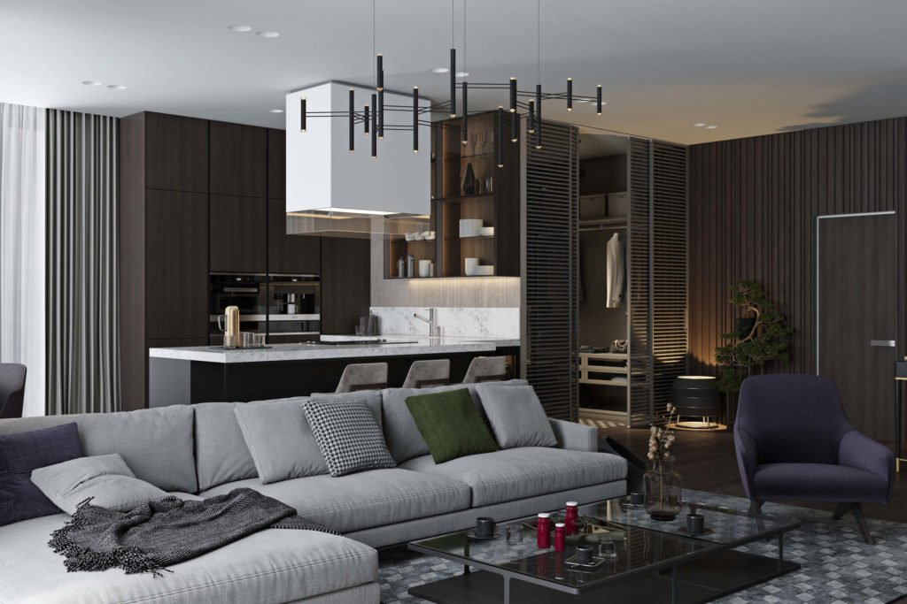

Дизайн интерьера в стиле минимализм
Не все так просто с минимализмом.
И хоть в названии этого стиля есть приставка «мини»,
интерьер усложняется необходимостью обеспечить комфорт,
мобильность и привлекательность за счет минимума интерьерной
отделки и лишних деталей.
Интересно, что получится в итоге?
Предлагаю ознакомиться

Истоки и основной принцип
Минимализм пришел в Западную Европу, а потом уже к нам из далекой Японии, необычной страны с философией
аскетического одиночества и глубокой внутренней сосредоточенности.
Для японцев, привыкших жить в условиях высокой плотности населения, главным правилом в обустройстве
жилища является освобождение пространства, которое обеспечит ощущения легкости, безграничности и позволит
мысленно сконцентрироваться.
Стиль призван создать баланс между внешним и внутренним миром.
Основные черты минимализма в дизайне интерьера
- только натуральные природные материалы в отделке (дерево, кожа, камень, шерсть);
- потолки. Стены. Пол. Оформляются в соответствии с правилами однотонности и отсутствия рисунков;
- свобода пространства;
- «умная» мебель и встроенная техника, которые обеспечивают функциональность и не занимают более четверти помещения;
- использование четких линий и строгая геометрия форм;
- хранение всех вещей скрыто из зрительного восприятия. На виду остаются только те предметы, которые представляют исключительную ценность для своего владельца.
- палитра выдержана в одном базовом цвете, который разбавляется 2-3 оттенками;
- массивные окна;
- максимально естественное освещение. Окна без штор — идеальны, однако допустимы жалюзи. Искусственные источники освещения должны быть скрыты (потолки с подвеской, подсветка софитами и др.) и создавать рассеянный свет без напряжения для глаз;
- никакого декора. Речь идет о статуэтках, скульптурах, вазочках, сервизах. Фото и картины должны иметь максимально простое обрамление, без лепнины и прочей вычурности.

Как не нарушить минималистический дизайн ?
- первоначально нужно выбрать мебель, которую легче подобрать к цвету стен, потолков;
- не пренебрегайте комфортом и удобством. Красота и эстетика не позволит Вам расслабиться;
- минимализм не приемлет ничего лишнего в своем интерьере. Даже, если Вы купили какую-то милую безделицу, не поддавайтесь искушению поставить ее на всеобщее обозрение;
- все ненужное с глаз долой. Не накапливайте вещи, убирайте в ящики;
- строгость и прямолинейность форм — это правильно. Круглые стулья, пуфики, допустимы, но не переборщите.

Минимализм не только в интерьере, но и в стиле работы
Несправедливо было бы не упомянуть, что минимализм — это стиль, который не собирает пыль. Лучшее решение для тех, кто не тяготеет к периодическим генеральным уборкам, является сторонником аккуратности и упорядоченности.
Разработать дизайн интерьера этого гениально простого стиля поможет студия дизайна “Geometrium”.
Нам не важно, в какой части света Вы проживаете, мы работаем не только в Москве, а удаленно по всему миру.